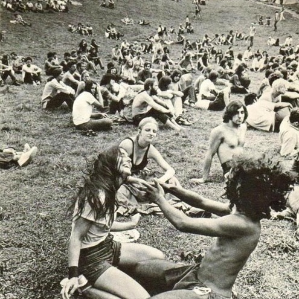

A Psychedelic Live Jam Mix by Studio Mosaic

A mix of career-defining live jams and peak performances from the late 60s, early 70s. Creme de la creme psychedelia!
00:00 Jefferson Airplane - Fat Angel (Fillmore East, 1968)
07:25 The Byrds - Medley: Turn! Turn! Turn!/Mr. Tambourine Man/Eight Miles High (FIllmore 1969)
17:07 Cream - Tales of Brave Ulysses (Winterland, 1968)
21:40 Velvet Underground - What Goes On? (The Matrix, 1969)
27:19 Rolling Stones - Sympathy For The Devil? (1969)
33:52 Led Zeppelin - Dazed And Confused (Royal Albert Hall, 1970)
42:50 Santana - Soul Sacrifice (Woodstock, 1969)
51:07 CSNY - Deja Vu (1974)
59:06 The Who - Magic Bus (Leeds, 1970)
1:06:50 Jefferson Airplane - The Other Side Of This Life (Fillmore, 1969)
1:13:24 Jimi Hendrix - Machine Gun (Fillmore East, 1971)
1:24:33 Allman Brothers Band - Mountain Jam (Fillmore East, 1971)
1:37:09 Grateful Dead - Bird Song > Dark Star (Old Renaissance Faire Grounds, Veneta, OR, 1972)
2:05:55 The Doors - The End (Hollywood Bowl, 1968)
Genre: Psychedelic Rock
Release: June 2019
Duration: 02:17:33
Listener Accessibility: 8/10